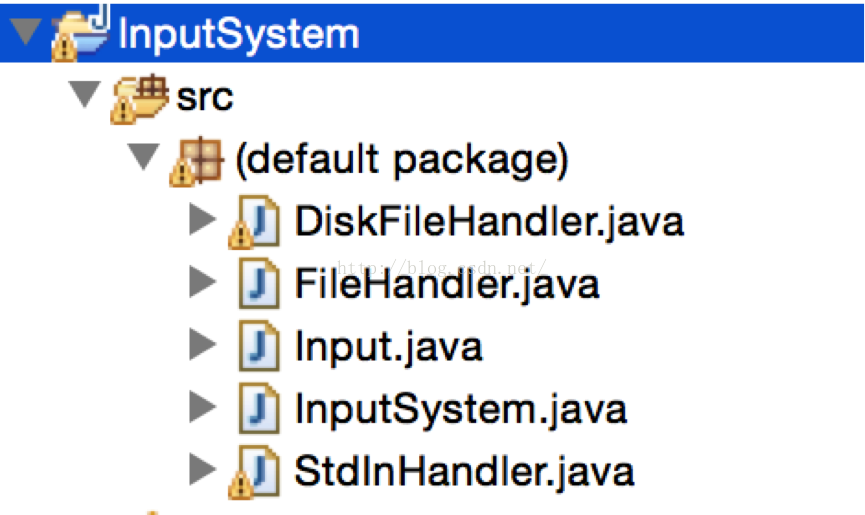

编译原理输入系统的实现
大家好，欢迎大家来到coding迪斯尼，愿天下没有难学的知识
阅读博客的朋友可以到我的网易云课堂中，通过视频的方式查看代码的调试和执行过程：
http://study.163.com/course/courseMain.htm?courseId=1002830012
这篇文章是我课程中的系列讲稿，也是编译原理动手实操系列的文章。
在我们南方有一句老话叫：无鸡不成宴。如果我们把编译原理当成技术大餐的话，
那我可以说：无码不成席。代码永远是体验原理的最好方式。
鸡和码放一次，不知会不会让大家想起硬盘上的女神.
本节的主要内容，用java实现了上一节所描述的输入系统，代码永远是掌握理论的唯一方式，本章所讲述的代码可以在以下链接下载：
http://pan.baidu.com/s/1mgREa1M
大家打开项目后先看目录结构：

Input.java 是项目的主体，该文件是输入系统的具体实现。FileHandler是一组输入流读取接口，输入系统根据它提供的接口，从输入流中获取字符信息。DiskFileHandler, StdInHandler 是FileHandler的具体实现。
打开Input.java, 按照小学生作文开头范式，我要说的是：首先映入大家眼帘的是：
开始先以一组常量定义了输入系统的各种属性，很多属性我都加上了注释，有几个变量我需要强调，Eof_read 表示输入流中是否还有可读的信息，如果输入流来自于文件，那么当读到文件末尾时Eof_read 设置为true.
我们需要注意，当输入流中没有多余信息时，我们的缓冲区中有可能还有没有读取的信息，因为我们是将信息从输入流放入缓冲区后再从缓冲区中取出信息进行处理的。
noMoreChars 返回true则表明，缓冲区和输入流都没有可读信息了。
大家可能会发觉 End_Buf 是缓冲区的逻辑结束地址，按照前面讲的，在它后面其实还有一段浪费的可用内存，为何这里它直接等于实际的内存结束地址呢，真实原因是在后面的代码中，它的值会做相应调整。
在接下来的代码中，有一个函数是ii_newfile, 该接口用于决定输入流是磁盘文件还是控制台，如果ii_newfile的输入参数filename 不是null 那么就以磁盘文件作为输入流，要是null,就以控制台为输入流.要注意ii_newfile并没有做将数据从输入流读入缓冲区的操作，它仅仅是初始化一些指针或变量。真正的将输入流读入缓冲区的是ii_advance函数，该函数的作用是从缓冲区中读取字符数据。
将数据读入缓冲区是比较耗时的操作，因此输入系统会等待外部真正请求数据时，才好触发数据读取操作。
大家还记得上节讲的，当Next指针越过Danger时将会引发Flush操作，也就是将数据从输入流中读入缓冲区。在ii_newfile的初始化中，我们特意将Next指针设成缓冲区的末尾，当ii_advance第一次执行时，发现Next越过了Danger,于是引发Flush操作，这样，数据就从输入流写入缓冲区了。
在代码中还有一些简单函数：ii_text(), ii_length(), ii_lineno() 用于返回当前要分析的字符串，字符串的长度，和所在的行号。Ii_ptext(), ii_plength(), ii_plineno() 用于返回上一个被解析的字符串。
有一个函数需要注意的是ii_flush, 该函数负责执行flush 操作，它先把缓冲区中还没有读取的数据向左平移，接着从输入流中读入数据，填充平移后产生的可用空间：
大家看代码中的注释基本可以略知一二，ii_flush要做的是将未读取的区域，向左平移到Start_buf处，平移的距离就是shift_amt, 未读取区域的长度是copy_amt, shift_amt + copy_amt 就等于End_buf. ii_flush 先判断Next指针是否在DANGER边界后面，然后才会执行平移写入操作。如果Next在DANGER前面，但是传进来的参数force为true,那么也会强制进行平移写入操作。再继续看函数代码:
接下来通过java库函数arraycopy 进行数据的平移操作,left_edge其实就是未读取区域的起始地址，平移后,从缓冲区的开头直到copy_amt处的数据都是未读取数据，因此从输入流填入数据是要从缓冲区的copy_amt处之后才开始，ii_fillbuf的作用就是将数据从输入流写入缓冲区。平移后，一些指针也要做相应的调整。
接下来再看看ii_fillbuffer函数：
ii_fillbuffer 先从fileHandler的read 函数中获取信息，也就是从输入流中读入数据，每次读入数据的数量用need表示，need是MAXLEX的整数倍。got 返回的是读到的数据量，如果读到的数据少于想要读取的数据，那就表明输入流中已经没有多余的信息可读了。
最后我们再看看，整个程序跑去来是什么样子的，打开InputSystem.java
当runStdinExample() 执行时，ii_newfile 输入为null, 也就是输入系统要从控制台做为输入流，当运行ii_newfile时，程序要求用户从控制台输入信息，我们输入如下：
回车后，程序由ii_mark_start开始往下走, printWord() 打出第一个字符串也就是typedef, 于是缓冲区中的数据及各个指针的情况如图所示。
Ii_mark_prev() 将当期的字符串设置为“上一个”字符串，再往下走：
第二次printWord()打印出的字符串是“int”, 此时缓冲区及各指针变量的状态如上图所示。
最后显示的是ii_ptext()输出的是上一个字符串，也就是typedef
ii_text()输出的是当期字符串，也就是 int:
整个过程执行结果如下：
输入系统到此就介绍结束了，阅读博客的朋友可以到我的网易云课堂中，通过视频的方式查看代码的调试和执行过程：
http://study.163.com/course/courseMain.htm?courseId=1002830012
在下一讲，我们将讨论词法分析的算法细节。